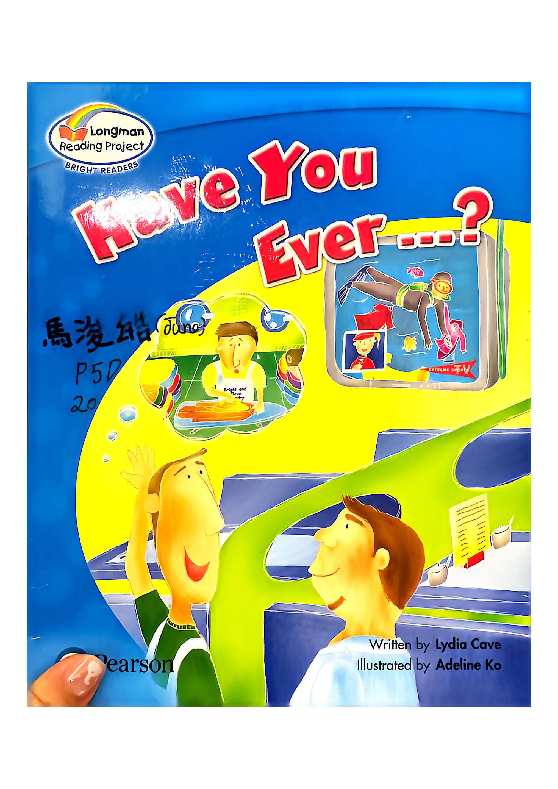
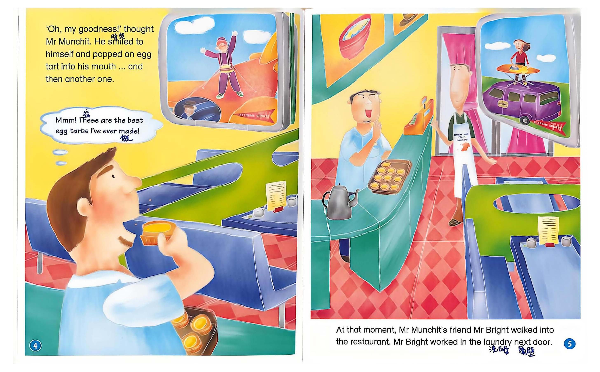
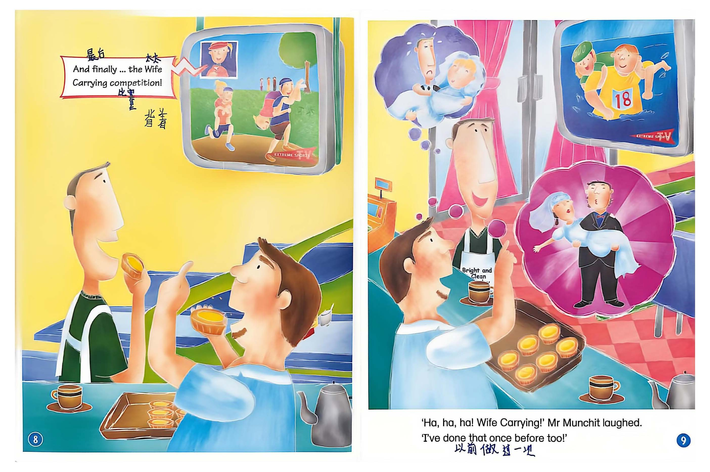
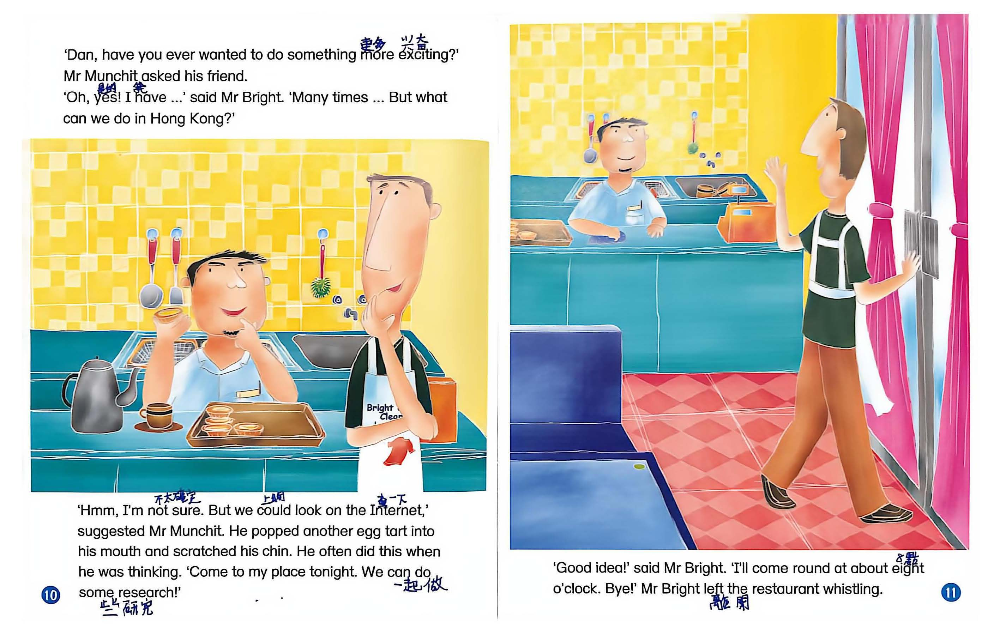
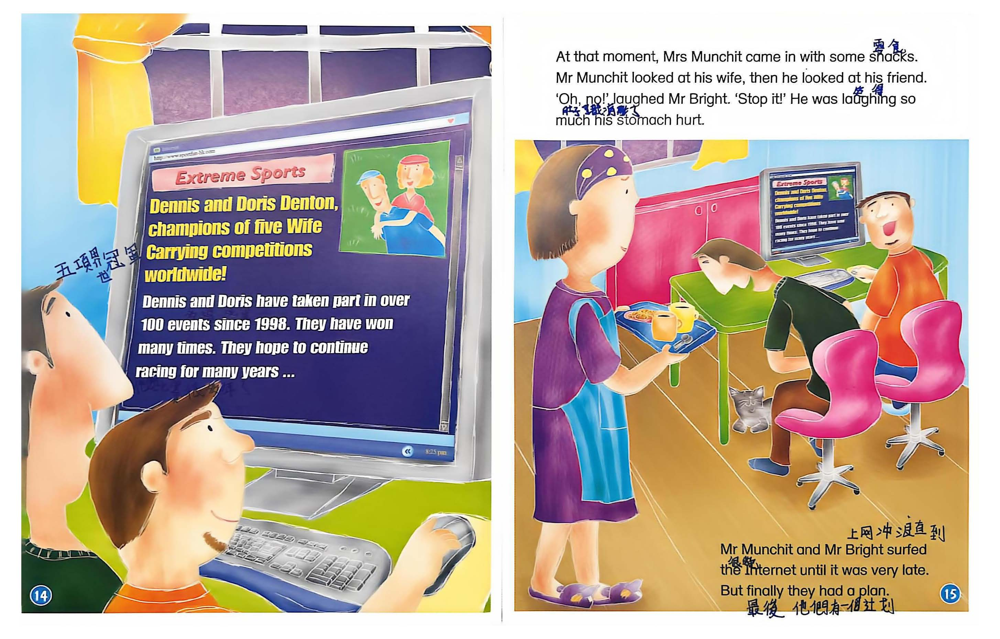
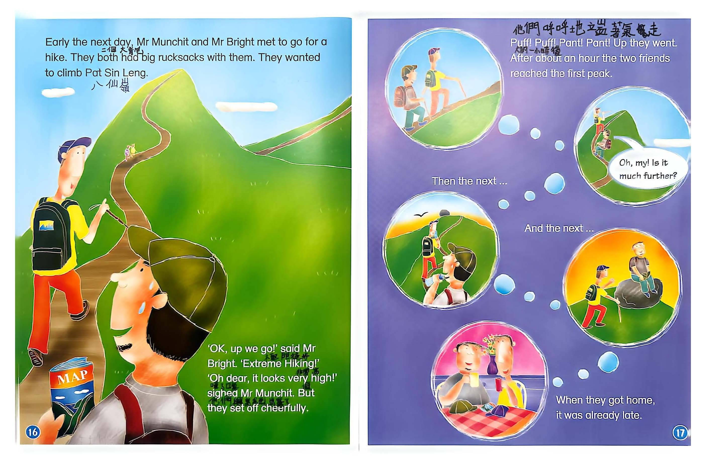
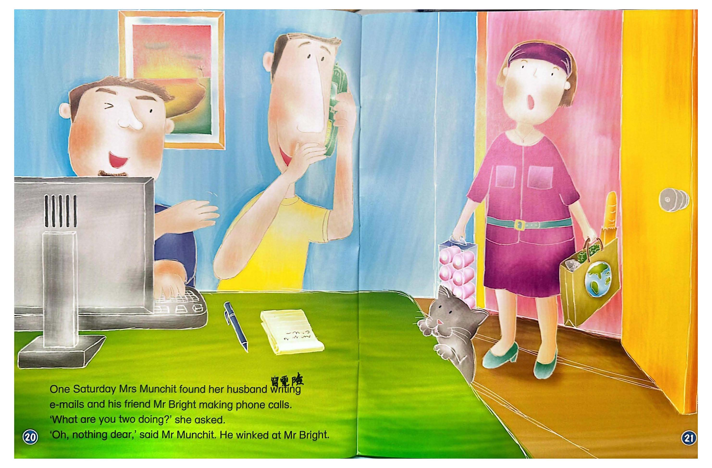
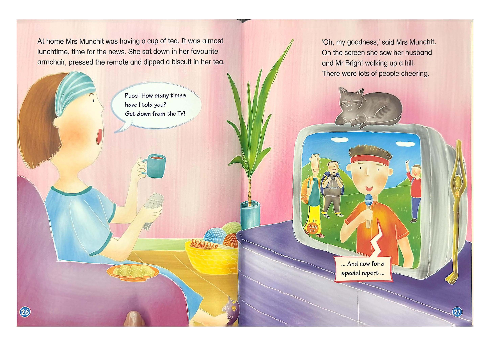
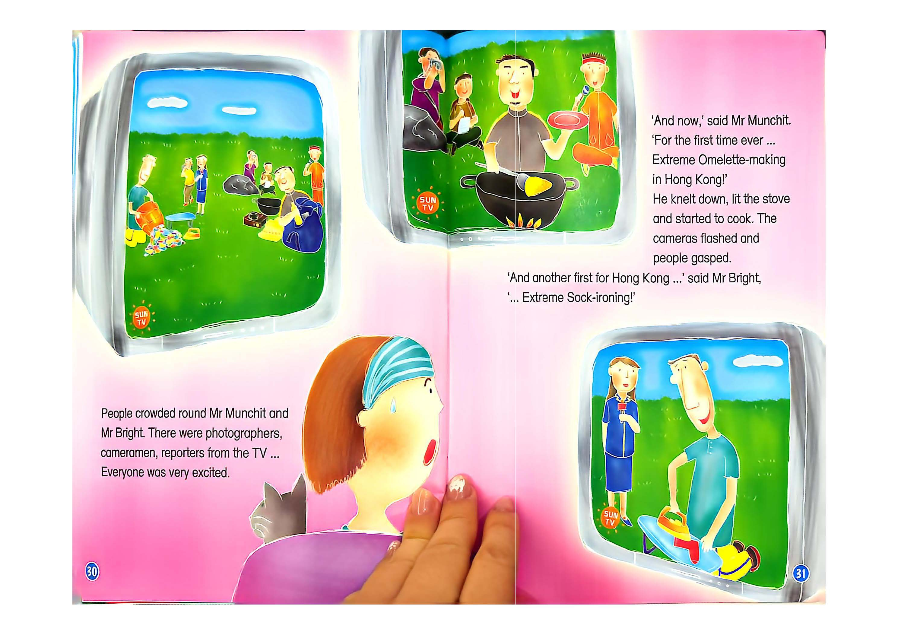
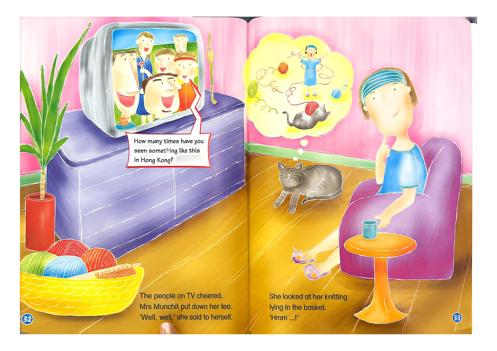

Extreme Omelette & Extreme Ironing
🔵點藍色單詞讀單字｜點整段區塊讀整句｜英式en-GB慢速發音
COVER【cover.jpg】

Page 2【page2.jpg】

Mr Munchit owned a restaurant. He was the cook. He liked his work, but sometimes he did not have many customers.
A plane flew across the TV screen. It looked like someone was walking on it!
Page 3【page3.jpg】

'Oh, my goodness!' thought Mr Munchit. He smiled to himself and popped an egg tart into his mouth and then another one.
Mmm! These are the best egg tarts I've ever made!
Page 4【page4.jpg】

At that moment, Mr Munchit's friend Mr Bright walked into the restaurant. Mr Bright worked in the laundry next door.
Page 5【page5.jpg】

'Dan, have you ever seen Extreme Ironing before?' asked Mr Munchit.
'I've seen Extreme Ironing on mountaintops and even underwater! I do that every day!' said Mr Bright.
Page 6【page6.jpg】

"Ha, ha, ha! Wife Carrying! I've done that once before too!" laughed Mr Munchit.
'Dan, have you ever wanted to do something exciting?' Mr Munchit asked his friend.
Page 7【page7.jpg】

'Oh, yes! I have ... Many times ... But what can we do in Hong Kong?'
'Hmm, I'm not sure. But we could look on the Internet to do some research!' suggested Mr Munchit. He popped another egg tart into his mouth and scratched his chin.
"Good idea! I'll come round at about eight o'clock." Mr Bright left whistling.
Page 8【page8.jpg】

Later, when his friend arrived, Mr Munchit was reading an article on the Internet.
Ivan Irons has won the worldwide challenge four times in a row! He has never lost an event! He has ironed on top of mountains twice, in the snow once and even underwater!
Page 9【page9.jpg】

Dennis and Doris Denton, champions of five Wife Carrying competitions worldwide! They have taken part in over 100 events since 1998.
Page 10【page10.jpg】

At that moment, Mrs Munchit came in with some snacks.
'Oh, no!' laughed Mr Bright. He was laughing so much his stomach hurt.
Mr Munchit and Mr Bright surfed the Internet until it was very late. But finally they had a plan.
Page 11【page11.jpg】

Early the next day, Mr Munchit and Mr Bright set off early for a hike. They both had big rucksacks. They wanted to climb Pat Sin Leng.
'OK, up we go!' said Mr Bright. 'Extreme Hiking!'
'Oh dear, it looks very high!' sighed Mr Munchit. But they set off cheerfully.
Page 12【page12.jpg】

Puff! Puff! Pant! Pant! Up they went. After about an hour the two friends reached the first peak.
Oh, my! Is it much further? Then the next... And the next... When they got home, it was already late.
Every Sunday Mr Munchit and Mr Bright climbed the steepest, highest hills around.
During the week Mr Bright did lots of ironing. And Mr Munchit cooked busily every day.
Page 13【page13.jpg】

One Saturday Mrs Munchit found her husband writing e-mails and his friend Mr Bright making phone calls.
'What are you two doing?' she asked. 'Oh, nothing dear,' said Mr Munchit. He winked at Mr Bright.
隔日一早如常赴約，出門時太太：「你的背包好大。」
'He really is behaving quite strangely these days,' she thought to herself.
Page 14【page14.jpg】

Mr Bright also had a very large rucksack. It was hard work climbing the hill.
At home Mrs Munchit was having a cup of tea. It was almost lunchtime, time for the news.
她坐在心愛的扶手椅，按遙控器，把餅乾蘸進茶裡。
「天啊！」蒙奇特太太驚訝，電視畫面出現丈夫與布萊特正在爬山。
Page 15【page15.jpg】

eggs.
socks.
「哇！」蒙奇特太太倒吸一口氣，大批攝影師、電視記者圍在兩人身邊。
Page 16【page16.jpg】

「現在，香港首創：山頂極限煎奄列！」他跪下點燃爐火開始烹飪。
「香港另一項首創：極限熨襪！」布萊特說道。
電視上的民眾熱烈歡呼，蒙奇特太太放下茶杯，若有所思自言自語。